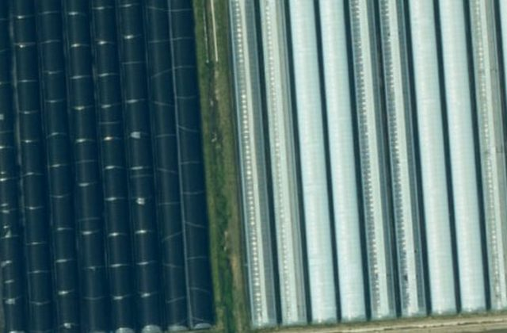
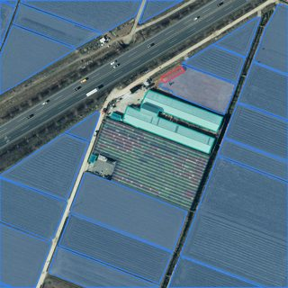

프로젝트
비닐하우스 2026
고치기끝난 프로젝트로 보관프로젝트장 LX 직원 넘기기 · 구성원 없음 더하기
지금 할 일 · 4단계
AI 결과가 맞는지 보기
AI 결과가 맞는지 보기
— 표본 20건
20건 중 0건 봤습니다. 다 보면 결과를 얼마나 믿을지가 정해지고
「현장 확인 필요」 필지 수가 섭니다.

보러 가기표본 1부터 차례로
- ${CK}데이터 올리기
- ${CK}학습데이터 구축
- ${CK}AI 학습
- 4AI 결과 맞는지 보기
- ${CK}서비스 공개
- 6서비스 운영 · 시범 적용 3곳
이 프로젝트가 만든 것
칸을 누르면 그 단계로



1차쓸 수 있음
1차 모델모델 승인 9.30
 시범 적용
시범 적용
다시 학습지금은 근거가 적습니다 — 새 영상 1 · 검토 요청 0
서비스
공개9.30
공개9.30
학습
끝9.30
끝9.30
모델
승인9.30
승인9.30
새
영상10.1
영상10.1
지금
10.1
10.1
기관 검토 요청 0건새 영상 1개앞 단계 표본 0/20
다시 학습(2번째) — 사유 고르고 시작기록 11 · 메모 0 · 파일 0오늘 08:58 프로젝트 만듦
- 10.01 08:58프로젝트 만듦LX 직원
- 09.30 15:35모델 승인LX 관리자
- 09.30 15:33학습 끝 · 2번째LX 직원
메모 한 줄파일남기기모두 보기 11 →